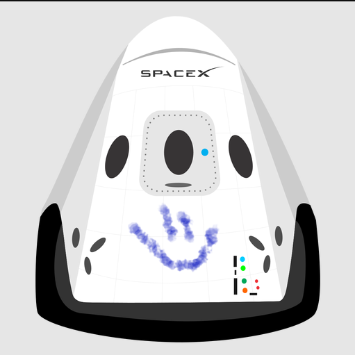

Hyperblog
Este es el blog de confianza
Este es el título atractivo e interesante del post
Y este es el párrafo de inicio donde vamos a explicar las cosas increíbles que se pueden hacer con ramas

Los blogs son la mejor forma de compartir información y tus ideas. Mucho mas que ir a conferencias o salir en Youtube. Excepto si eres un rockstar. Pero estadísticamente no lo eres.... por ahora.
Suscribete y dale like
Aqui vamos a hacer un blog post
Y este es el parrafo de inicio
Nuevo parrafo para agregar al commit
Y este es el parrafo que se agrego a la rama MASTER
Parrafo adicional
Parrafo adicional #2